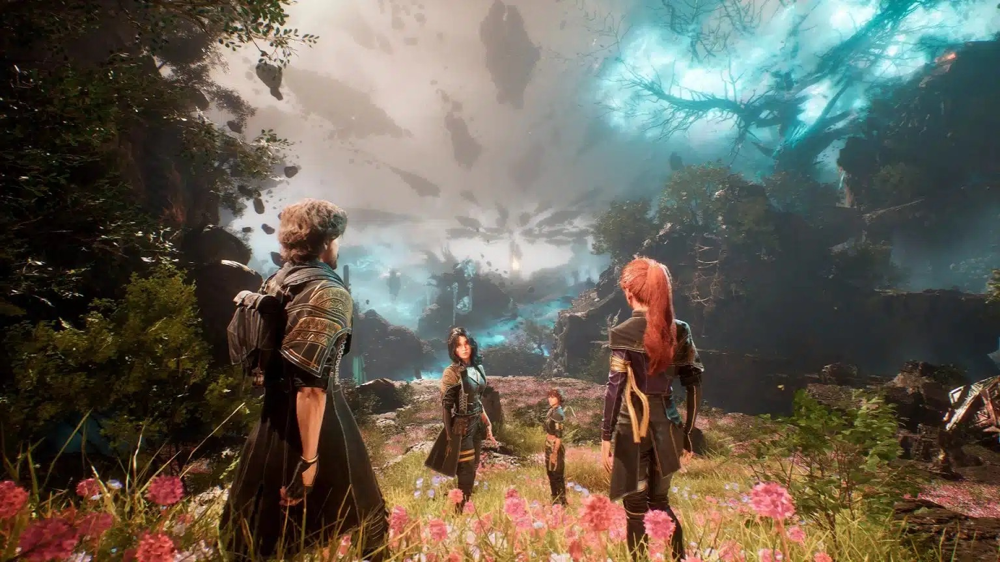
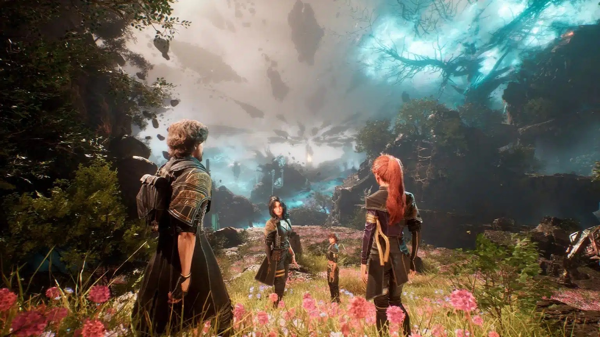
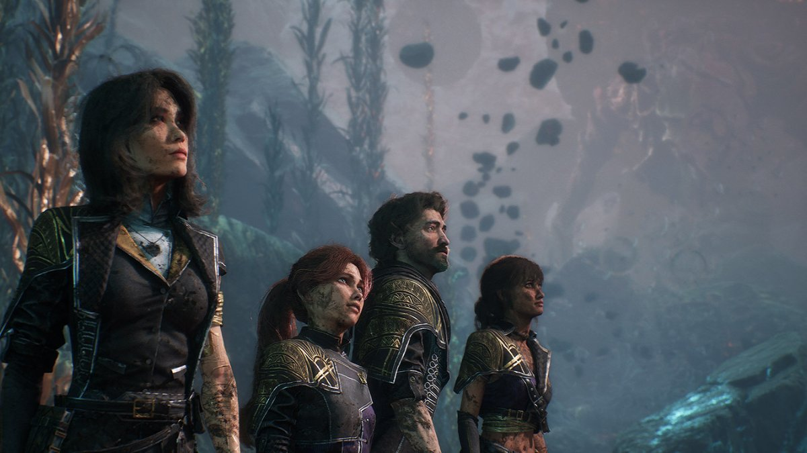
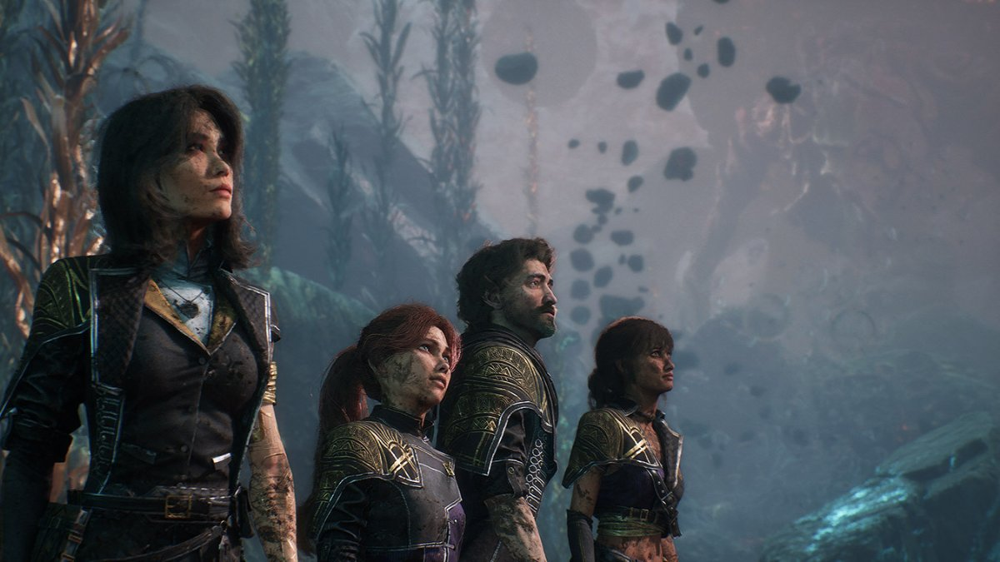

 

EXPEDITION 33
Expedition 33 convida os jogadores a embarcar em uma jornada poética e sombria para desafiar o destino. Desenvolvido pela Sandfall Interactive e publicado pela Kepler Interactive, o jogo combina exploração narrativa profunda, combate estratégico em turnos e uma direção de arte deslumbrante que mistura fantasia e melancolia.
A história gira em torno de Cléo e de um grupo de exploradores que partem em uma missão desesperada para impedir a Pintora, uma entidade misteriosa que, a cada ciclo, apaga civilizações inteiras do mundo — transformando todos em pinturas eternas. O número 33 marca o novo ciclo, e talvez a última chance da humanidade.
Ao longo da jornada, o jogador atravessa paisagens deslumbrantes e decadentes, que variam de ruínas cobertas de flores luminosas a cidades engolidas pela névoa. Cada local conta um pedaço da história de um mundo à beira da extinção, com personagens que carregam dor, esperança e propósito em suas palavras e gestos.
Expedition 33 não é apenas um jogo sobre luta e sobrevivência; é um poema interativo sobre o significado de existir quando o fim é inevitável. Com uma trilha sonora delicada, visuais pintados à mão e uma narrativa introspectiva, o título promete tocar o jogador tanto pela beleza quanto pela tristeza de seu mundo.